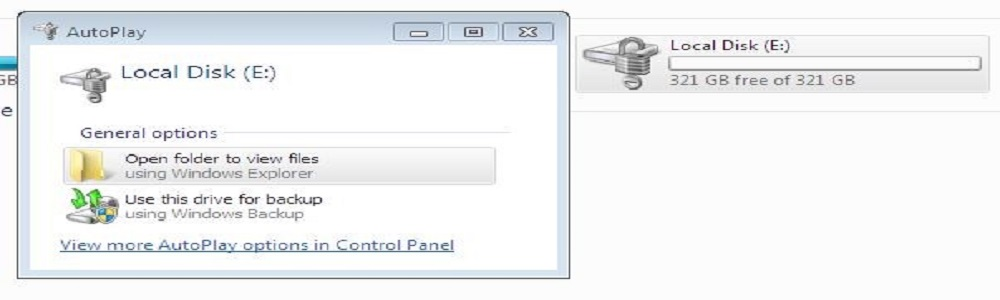

FAQ on How to Save and Recover Bit Locker Recovery Keys
Bit locker is used in two versions of windows 7 and Vista
And in Window 8, 8.1 and Window 10 you can use three versions of these,they are given below
1. Education version 2. Pro version 3. Enterprises version
Here we use Window 7 ultimate version to describe bit locker function.
1.Open my computer and which partition you want to lock Right click on that.
2. And click on Turn on Bit Locker.... tab.
3.Now choose how you want to unlock this drive we use here password to unlock the drive then click on Next.
4. Now how do you want to store your recovery key here we use print the recovery key Option and Click on Next.
5. Print this Recovery Key or save for future use.
6. Save as Bit Locker Drive Encryption Recovery Key and Save.
7. Here is the Recovery Key.
8. In this step are you ready to encrypt this drive and click on Start Encrypting.
9. Now the Encryption of drive E is complete after restarting your PC drive E is protected with Bit locker.

10. Double click on Lock Disk E then type your password to unlock this drive like below.
11. When you forget your password use I forgot my password key.
12. Now Type the recovery key, which we save early.
13.After Entering the Bit locker recovery key the drive is unlocked successfully.
